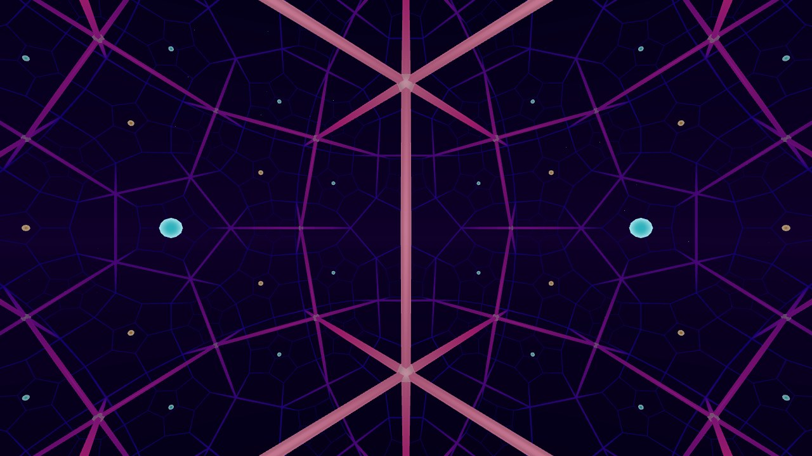

Hyperbolic Space
This scene puts you inside a tiling of 3D hyperbolic space, the space that curves the opposite way to a sphere. Head tracking happens in hyperbolic space too, so walking around your room actually moves you through it.

Works in a desktop browser, on a phone, or in the Quest Browser. Press Enter VR on the start screen to use a headset.
The Honeycombs
There are two to pick from in the menu.
- {5,3,4}: dodecahedra with 90° angles between their faces, four around each edge and eight around each vertex. A regular dodecahedron in flat space has angles of about 116.6°, so these can only exist in hyperbolic space.
- {4,3,5}: cubes with 72° angles between their faces, five around each edge. In flat space only four fit.
All the cells are the same size. Far away ones look small, but they shrink a lot faster with distance than anything would in flat space. That's why you can see so many of them at once.
Walking in a Loop
In hyperbolic space the angles of a triangle add up to less than 180°. One side effect is that if you walk in a loop and end up back where you started, you're turned a little compared to when you left (holonomy). Walk a big square around your room and the tiling ends up rotated. Bigger loops give bigger turns.
The Curvature scale slider in the menu sets how many meters one unit of hyperbolic space is, from 0.5 to 3.5.
Smaller values pack more curvature into your room and make the effect easier to see.
The menu also shows how far you are from the start, and Return to start brings you back.
How It's Drawn
This is based on Non-Euclidean Virtual Reality by Hart, Hawksley, Matsumoto, and Segerman. Points are stored in the hyperboloid model. Each frame, your head movement is turned into a hyperbolic translation and rotation, and the world is drawn in the Beltrami-Klein model, which keeps straight lines straight. Each eye gets its own offset in hyperbolic space.
When you walk out of the center cell, a symmetry of the honeycomb moves you back into it. The picture doesn't change, but the numbers stay small, so you can keep walking as far as you want without losing precision.
The opposite case, positively curved space, is in the Spherical Space scene. See the 120-cell page for that one.
Controls
In VR, walk around, or pinch empty space and pull to move. With controllers the left stick moves and the right stick turns. On a desktop, use WASD or the arrow keys to move, drag to look, and Q/E to go down and up.